By having a Unity ID, in addition to being able to use the game engine (license for use), you can also access the Unity Asset Store
where you can download both free and paid assets.
To develop video games, you need the Unity editor.
The first time you log in to Unity Hub with your Unity ID, you will be prompted to install a Unity editor.
By default, the Unity editor that will be installed is the latest stable version, LTS (Long Term Support).
This default installation is not recommended as it does not allow for installation customization.
From the Installs section in Unity Hub, you can install different versions of the available Unity editor:
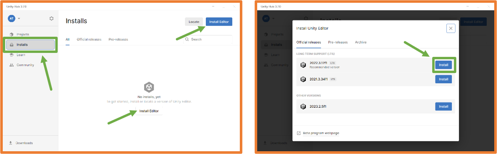
You must choose which configuration you want for the Unity editor that will allow you to create game executables for each platform, add Asian languages, and include Unity documentation.
For class purposes, it will be enough to select Linux Build Support (IL2CPP).
Code Editor
Unity requires a code editor for scripting, and during the installation on Windows, Microsoft Visual Studio Community is included.
In class, those who have it will detect Visual Studio Code and set it as the default editor.
If you do not have that editor installed and do not want to install it, you should uncheck it.
If you use Microsoft Visual Studio Community or Visual Studio Code
as the default editor, you can install the extensions for the C# programming language, which is used with Unity.
If you do not have Microsoft Visual Studio Community installed and do not want to install it, you should uncheck it.
You can use any other code editor by changing the Unity editor's settings once installed.
In Menu → Edit → Preferences.
If needed later in the development process, you can add/remove modules to the editor.
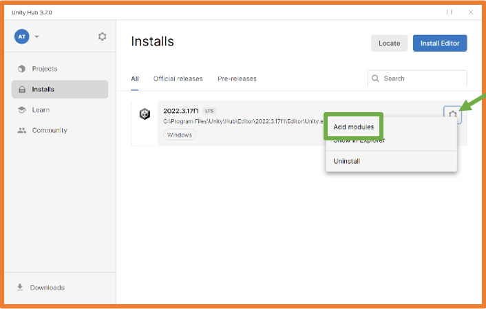
Create Unity Project
Unity HUB will be the starting point for any Unity project. In its window, you can see the sections:
Projects: project manager.
Installs: manager of installed Unity editors.
Learn: self-learning section
Community: access to the community with sections such as Asset Store or Forums.
From Unity Hub, in the Projects section, you can create projects by clicking the New project button.
When creating a project, you need to choose the type of project so that the necessary libraries are loaded.
Once the project is created, it will be available in Unity Hub.
During creation, the Unity editor will open for that project.
Activity 1: Installation of a Unity editor.
Activity 2: Create the project TestYourName.
Unity Editor
By default, the Unity editor window looks like this:
Unity uses Object-Oriented Programming,
which is why all game elements are included in the object hierarchy.
The game occupies the highest position in the hierarchy and
within it are the scenes, which can be considered the screens of the game.
The hierarchy shows all the elements in a scene.
Within each scene, you must add all the necessary elements,
these elements are GameObjects. Scenes also follow a hierarchical structure, allowing GameObjects
to be grouped within each other.
By default, a Unity project contains a Scene that in turn contains a GameObject
of type camera called Main Camera and a GameObject of type
light called Directional Light.
In the central part of the editor, you can see a scene view which,
when you press the play button, will become the view from the camera configured in the game.
When you select an object in the scene, the Inspector displays all its characteristics.
From the code, you can access the components of each object.
Each type of object will have default components, and additional components can be added if needed.
Main Camera 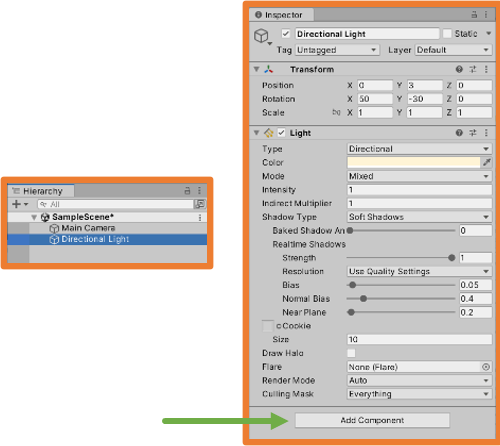 Directional Light
The File Manager allows you to view and perform all required actions on the project files.
It is recommended that all folders and files you want to create be created from the file manager in the editor.
When the game is running (the "Play" ▶ button on the top bar), the view section changes to the camera view and
the entire interface darkens.
While the game is running, you can work with the project to see how it reacts to different values,
but changes only persist during the game execution.
Since there is almost no difference in style between the two states, sometimes it’s easy to forget that the game is running and lose changes.
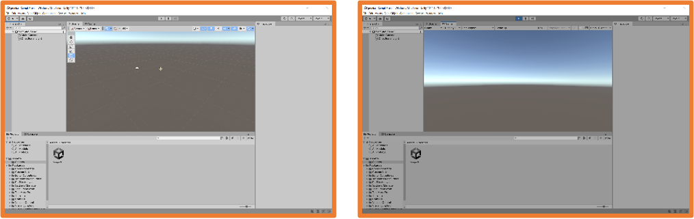
From the Menu → Edit → Preferences in the Colors section,
you can decide which color will overlay the interface when the game is running: Playmode tint.
It's helpful to choose a mode that provides high contrast so you can always know if the game is running or not.
Once the color is changed, it’s much easier to see that the game is running.
Adding Executable Code
To add executable code to the project, you need to create files to contain the code; these files are called scripts.
There are several ways to add scripts to the project, but the most appropriate method is through the file manager.
Additionally, it is important to maintain good file organization, so it is common to create a folder named Scripts
within the Assets folder and place all necessary scripts there.
Once the Scripts folder is created, right-click on it or on the folder icon in the manager and select Create → C# Script
At this point, you should type the name of the file, following C# naming conventions similar to Java
(CamelCase with the first letter capitalized).
Also, the script should have a name that clearly identifies the actions it performs.
When a Script is selected in the File Manager, you can see its code in the Inspector, but it cannot be edited from there.
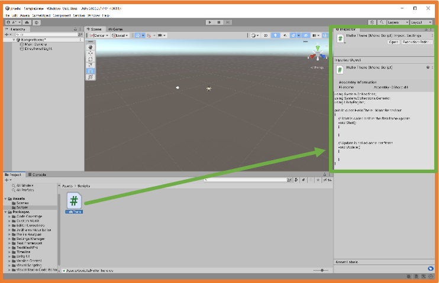
Double-clicking the Script will open it in the configured code editor.
Microsoft Visual Studio Community Visual Studio Code
Default Structure of a Unity Script
A default Unity Script has the following structure:
The frequency with which a game loop executes can vary, so the Update method does not always run the same number of times.
The following code will make messages appear in the console when the script runs.
To test this, click the "Play" ▶ button in the top center of the Unity editor.
As seen, no messages appear in the Console tab.
This is because to run a script, it must be attached to a GameObject.
You can attach a script to a GameObject by dragging the script from the task manager to the GameObject in various ways:
Dragging the script onto the GameObject in the hierarchy.
Dragging the script onto the GameObject in the scene view.
Selecting the GameObject and dragging the script onto the Inspector.
Once a script is attached to a GameObject, it becomes a component of the GameObject and appears in the Inspector.
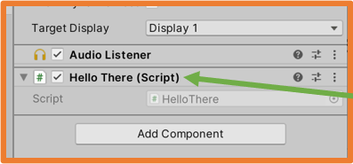
Now, when running the game, the created script will execute.
It is important to check the Collapse option, which will consolidate messages with the same content into a single line and increase the count of occurrences.
Also, enabling the Stats option in the view can provide information such as the FPS (frames per second) at which the game is running.
Activity 3: Create a Script named MiPrimerScript that displays "Hello, world!" and attach it to the Main Camera. Then remove it and attach it to the Directional Light,
and finally create an EmptyObject and attach it to that. Is there any difference?
Scripting
Like any software application, games need their functionality to be coded.
In Unity, functionality is coded through scripts.
With scripts, you can:
Respond to player inputs.
Execute events at the right moment.
Create graphical effects.
Control the physical behavior of GameObjects.
Implement an AI system for game NPCs.
…
Currently, the only recommended programming language for creating projects with Unity is C#.
There is also support for UnityScript, which was designed from JavaScript specifically for Unity, but its use is discouraged. It is possible that some current projects may still have scripts in UnityScript.
Previously, the language Boo, which had a syntax similar to Python, could also be used. Today, it is no longer supported.
C# was created in 2000 to be compatible with the .NET platform from Microsoft.
It inherits the best features from C++, Java, and Visual Basic.
It is a native object-oriented language.
Thanks to the IL2CPP library, scripts created in Unity are converted to C++ scripts so that the native compiler can complete the compilation on the target platform.
A Unity script has the following basic structure:
UnityEngine: imports the MonoBehaviour class needed to define scripts associated with GameObjects.
System.Collections: .NET library with lists, arrays, hash tables, etc.
Defined class that extends MonoBehaviour:
Start Method: used to initialize the GameObject.
Update Method: executed once per frame, also known as the game loop.
In C#, all instructions must end with ;just like in Java.
Data Types in C#
Basic data types in C# are:
Compound data types:
Array: a collection of one data type.
List: dynamic lists (can modify their size).
Data types specific to C# for Unity are:
Vector3: a package of three floats (x, y, z) that facilitates working with points, vectors, and directions within 3D space.
GameObject: reference to a GameObject in the scene or a prefab from the project.
Transform, Rigidbody, or any other component: reference to such a component within a GameObject.
Texture, Material, or any other type of asset: reference to an asset from the project.
Operators
The operators are similar to those used in Java:
The Mathf class allows calculations with float numbers:
Examples:
Mathf.Abs(number)
Mathf.Round(number)
Mathf.Ceiling(number)
Mathf.Floor(number)
Mathf.Max(a, b, c, d)
Mathf.Min(a, b, c, d)
Mathf.Pow(number, exponent)
Mathf.Sqrt(number)
…
Variables
Variables in C# are defined just like in Java:
int age;
They can also be initialized at declaration:
int age = 21;
Once declared, their value can be changed at any time:
age = 22;
If variables are declared for the class as properties, their access can be set as public or private.
If a variable is declared within a method, the access type should not be declared as it will only be visible within that method.
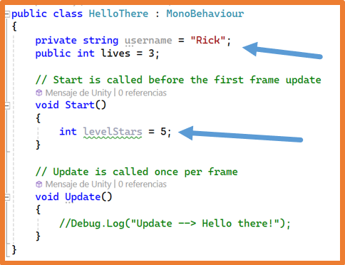
Variables declared as public properties will be visible from the Unity Inspector during runtime, allowing their values to be changed from there during execution.
It should be noted that changes made during execution are temporary, and when execution stops, it will return to the initial state.
Control Structures
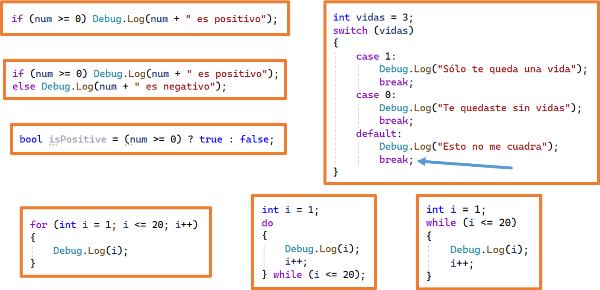
Arrays
Declare an Array
You can specify its size and then assign values:
You can declare it by directly assigning values:
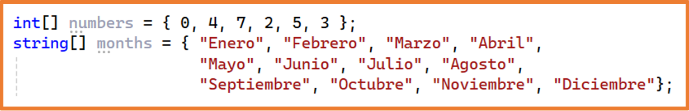
Iterate through an Array
Using a for loop:
Using a foreach loop:
Lists
Lists allow modification of their size and addition/removal of elements.
You need to import the library:
Declare an empty list:
Declare a list by assigning data:
Lists allow modification of their size and addition/removal of elements.
Modifying elements is done similarly to Arrays:
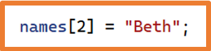
Add elements to a list:
Remove elements from a list:
Get the length of a list:
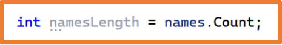
Remove all elements from a list:
Check if a value is in a list:
Sort a list:
Reverse the order of a list:
Iterate through a list:
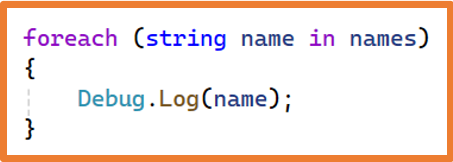
Convert a list to an array:
Convert an array to a list:
ArrayList
In an Array or a List, you can only store data of one type.
In ArrayList, you can store data of different types and it does not have a predefined size like lists.
You should be careful when changing data because the compiler does not perform any type checking:
HashTable
HashTable, also known as dictionaries, is a composite data type
where each element is a key-value pair.
In HashTables, data is accessed through the key.
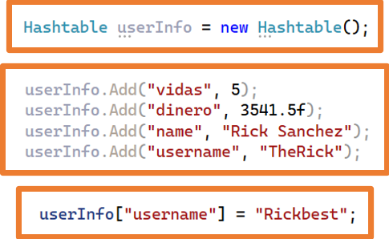
Keys must always be of type string.
The size of a HashTable is dynamic, like lists.
You can check if a key exists with the Contains method, and to use the value you need to perform a casting:
Iterating through a HashTable:
Methods
Like in any object-oriented language, you can create methods within classes.
In C#, to create a method, you should follow this structure:
Access modifier (if none is specified, it defaults to private).
Return type (void if it returns nothing).
Method name (first letter capitalized and CamelCase).
Parentheses to indicate parameters, if any.
Braces to indicate the method's code block.
Method declaration:
Calling a method is done the same way as in any programming language:
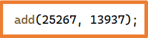
MonoBehaviour Class
When creating a C# script in Unity, you will notice that the class containing the script inherits from the MonoBehaviour class.
The MonoBehaviour class is necessary for scripts that are associated with the project's GameObjects.
Since Unity operates on events, within classes inheriting from MonoBehaviour, you can include a series of default-defined methods that will execute when the events associated with those methods occur.
By default, two methods are added that execute with specific events:
Start: is called in the frame when the script is activated and just before the first call to any Update method.
The game loop can be defined as the different phases a script goes through during execution:
Initialization
Physics Update
Input Update
Game Logic
Destruction
Each of these phases is associated with a set of methods from the MonoBehaviour class:
When the game is executed, Unity starts running the game loop, and in each phase, it will call the corresponding methods that are found in the scripts added to the GameObjects in the scene.
Example of a script implementing some of the MonoBehaviour class methods: